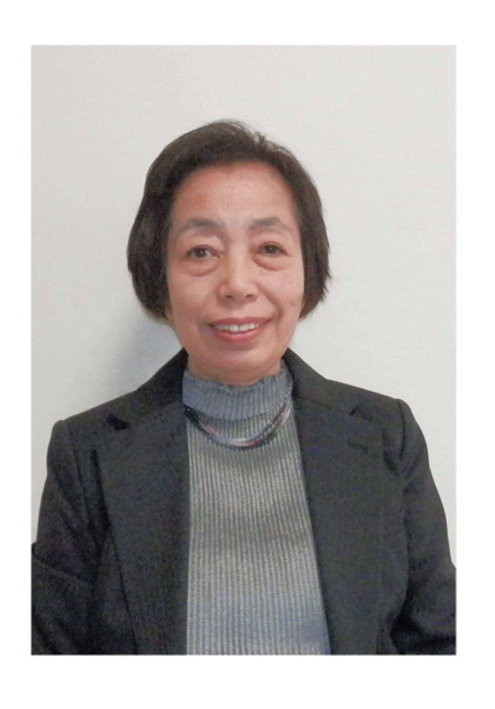
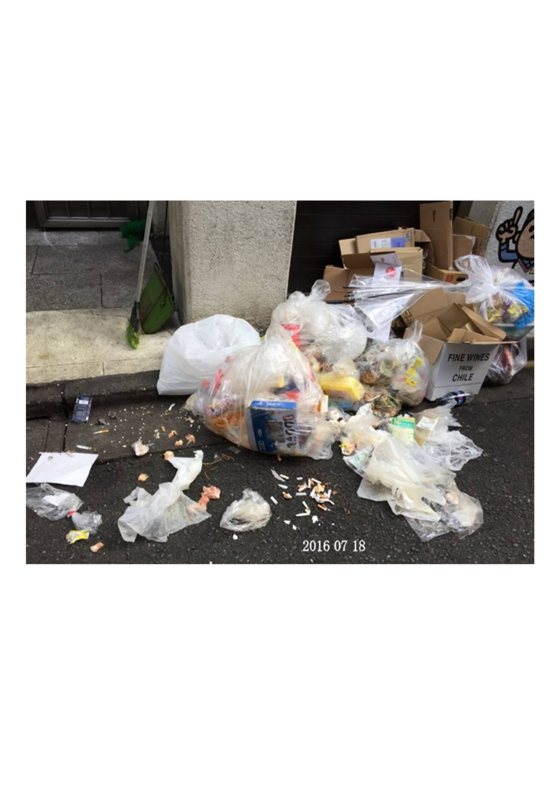

| 大好きな出来の悪い子供たち | |
| 虹橋七子 | |
| (2016) | |
私が、日本の暑い夏を迎えるのは、七十二回目の前期高齢者である。
この八月に天皇陛下が生前退位を希望されているとのテレビニュースが流れて、その後、陛下ご自身が「お気持ちや、ご意向」をテレビで発表されていた。
前撮りのビデオメッセージであったが、そのお話は１０
分程、姿勢もくずされずお声もはっきりと、ご自身が書かれた原稿を感情も抑えやさしく読んでおられた。
本当に日本の誇りの（象徴）天皇陛下、すぐにの生前退位は無理らしいが、法的に早くご意向に沿うよう解決してあげたい。
私も、老人となったが、世間を見ると七十二才なんてまだまだ先のある年代、世の元気ばあちゃん達は観光地や街中を賑わせている、
もっとがんばれ！ と自身にはっぱをかけたが、しかし人それぞれ私はダメ、もう限界......
そんな折、「なにか自分史を書いてみませんか？」の誘いに乗って、いまさらと思いつつも
「そうね、メモ的日記は長年書いてあるので、我家の履歴はそれで十分と思うけどね」
「でも、それをまとめ書きするのも良いじゃないですか」
と言われ、
「とくに少し前の昔の母子家庭の生活って、どうだったのか、今の人は興味持つかも知れませんよ」
「そうね、昔は母子家庭イコール貧しさでしたものね。今は誰も単親家庭なんて一般的で恥ずかしくもないし、かりに世間の人が、それを強調すると偏見だ！ 差別だ！ とすぐ抗議される時代ですものね、時代の違いよね」
「私が三十二才で離婚した時は、長女が四才になるちょっと前と二才の双子、三人の子持ちでしたよ」
今私の、話し相手は電子書籍の営業社員さん。
私になんとか電子書籍に関心を持ってもらおうと、自分史の書き方を説明してくれている、恥ずかしくもこの四十年間、活字本は読んだ事がない私、本なんてまったく興味なし。
自分史であろうが、書き出しがまったくわからない、日記のようにはいかない、それに今は清掃員として二ヶ所のパートで二往復の通勤で疲れるし、一日中無言の生活をしているので、せめてカラオケで声を出す訓練をしようかと、パート近くのお店を見つけたばかり。
やっぱり無理、無理。
それに私の長年の日記帳と言っても、メモ綴りで文章は書いたこと無い。恥ずかしい思いをいまさら......。でも、電子書籍は誰も買わなければ、恥もへったくれもない、そのまま宙に浮いてるままだ、気にする事ない。
そうよ！ 気にする事はない、はてさて原稿用紙も無料だと言って、もらってしまったし......。
「じゃあ、来年春になったら来てみて、それまでに、お金と原稿なんとかするから」
「書くだけなら、無料ですよ、ご自分の為、今から始めて下さい、一日に一ページ書こうと思えば楽ですよ」
私って、へんに律儀なのよね、先方さんは別に期待している訳でもなく、ダメで元々と思い営業訪問しているのに。
せっかく時間をさいて来てくれたのだからと気を使ってしまう私、そして忙しいのに、早くも次の週から古い日記帳を出して、どんな生活をして来たのか読み返している私、内心は、ちょっと待ってよ。
「今貴方のセールスに、乗りかかる場合じゃないのよ！ 家族のごたごたがあるし、いろいろ大変な時期なのゴメンネ」っていう感じ。
でも、すべてよし！ の時を待っていたら、私の人生、死ぬ時が来ても、すべてこれでよしとならないであろう。
日記を読み返すうち、自分の歩んで来た出来事をうーん、あの頃、私も若かったんだ、二度と同じ人生なんてゴメンだ。この日記帳、破きたい程つらい......
つくづく家康語録の「人の一生は重荷を負って遠き道をゆくがごとし......急ぐべからず」が浮かんできた、まったくなーと思う 私の重荷とは、なんであったのか？そこで、とりあえず、ながーい日記を書くつもりで、始めて見ようと、古い日記帳頼りにパソコンに向かった。ここでやっと本題に。
今、私の視力は老眼鏡四・〇。これ以上は、一〇〇円ショップで売っていない度数だ。
だらしない私はメガネを、まとめ買いしている部屋のテーブル、台所、パソコン前とかバッグの中等に置きっぱなし、メガネ洗浄は十本分を週一でやっている。そしてなお、急ぎのお出掛け時はメガネどこだ、どこだと探し回りあせる
歩行も困難、通勤時の駅構内では、人波の列に入っていけないし、ホームへの階段は、テスリ棒頼りの老人歩きだ。
ううん......その他、身体の悪い所は？ そう頭の回転と記憶力、物忘れ、同じ事を何度も話す。失礼！ この話止めとく。私も誰もが同じ事を言う年代だ、やだやだ......。
しかしである。人と違う私の可哀そうな所は、病院へ行けない事だ。すべて街の薬局で買い、薬で我慢している。この話はあとで書く事になるが私の皮膚病の為だ。だから高齢者の無料検診も無視、（眼科には一度行かせてもらったが）
でも、歯医者さんだけは健康保険を使っている、実を言うと私、歯並びが悪く出っ歯です。
小学生時代。私のあだなは"出っ歯の出目きん"です。"土人"と言われた時期もあった、もちろん、男の子からの呼びかけで女の子はちゃんと名前で呼んでくれていたけど、不思議と嫌な感覚は無く、その事で傷ついた記憶は無い。
貧乏ゆえに担任の先生からは、同情的に目をかけられたゆえかも知れない、担任の先生は二年交代で三人の大好きな良い先生にお世話になった。
ちょっと横道になるがあだ名の"土人"で思いだした事をご披露したい。
私の子供達が小学校六年頃、勤務先の社員旅行があり、十五人位でマレーシア、シンガポール三泊四日で出掛けた。そしてマレーシアの国立博物館を見学していた時
「ＸＸさん、あっちで社長が呼んでるよ」と秘書兼社長の世話係の青年が私を呼びに来た。
館内でなんの用かしら？ と急いで社長の所へ行った。社長曰く「おゝ来たか、今あんたのお母さんの写真を見てたんだ、ほら」と言って壁に掲げられている大きなパネル写真を指さしている。
ううん？ そこには、大昔の原住民の裸のおかあさんが真っ黒な顔で笑っている。「ほらあんたのおかあさんだよ！」だって、笑えるでしょ。
わざわざ私を探して土人扱いするなんて、セクハラか人種差別？ かもね。
でも時代が時代、まわりの仲間達は大笑いしているだけ、社長も私をからかいたかっただけ、それだけの話でした。
つぎ足しで悪いですが、歯の事でもうひと話し。
歳月はずーっと飛んで六十歳後半の私、大晦日の日、道端で前のめりで顔面から勢いよく転倒した。
下はコンクリート道路、ポキと前歯が折れ、血が出ている、なのに照れながら笑っているへんな老人の私。
取り急ぎ、家に帰り持ち帰った折れた歯と口を洗い、やってしまった！ と自分の不注意さにあきれてしまった、暮れである、当然歯医者さんはお休み、明日はお正月で、私は日光へ初詣のツアーに参加、金谷ホテルで食事もする。
でも不思議、私の頭の中の半分はちょこっとのうれしさでウキウキしている。この気持ちわかる人はいないはず......。出っ歯が折れたんですよ、早く歯医者さんに行って義歯を入れて、まともな顔になりたいと思った訳、バカみたい旅行中は転倒の際、唇を切ったので、たらこみたいにはれあがってしまった口元。
旅行写真は遠目で撮ってもらった。歯医者さんは正月六日から、診察の結果、一本は根が残っているので、抜くのはもったいないとの事で差し歯。
完全に抜いた前歯は、上下の関係上、同じ型で作らないと嚙み合せが悪いとの事で私の出っ歯は元のままの入れ歯、残念、残念。この時は国民保険、本人は三割負担でした。（今の私は高齢者保険で一割負担）
お正月早々の出来事でした。でも私を知らない人も、美人でない私を想像出来たでしょ？
ところで、この本のテーマは子育てに決めました。
そう、子育て以外になにもしてこなかったし、私も子育ては失敗しながらやって来た事なので、気負わず書けるかも？
まずは私事"婆―婆"の自己紹介！
中学を出て十五歳から社会人となった東京っ子の私、その年、我が中学校の卒業生は多く五百四十人位、その内、中学止まりで学業を去った者は、たったの三十人から五十人程（昭和三十四年度）
始めから、同級生に差をつけられての淋しい人生への出発だった。
せめて夜間高校へ行けば良かったのに......いろんな方法があったはずだ......今みたいな情報社会でなかったので、世間が狭く親の決めたままの進路であった。
親の気持ちとしては"我家は貧乏"と言う強い思い込みで、働くのは当然と考えていたみたいだ。それに親に反抗なんて出来る時代でもなく、私は不本意ながら就職組へと進んだ。弟もそんな調子で中学卒だ。かわいそう。
親戚等に相談すれば、良い案もあったはずなのに。今から五十七年前の母子家庭の我家の様子でした。
その後の私の社会人生活はそれなりで、病弱の母と共に苦労多し、文章として書いても、ただの長い退屈な物語になってしまうので、やめておこう。昔人間の私は、お給料は袋のまま全額母親に手渡し、小遣いは日曜日だけのアルバイトでまかなっていた。
冷たい母親みたいに書いてしまったが、母はしっかり者で食生活にしても、私の記憶の中では、終戦数年後からやみ米の白米で育ててくれたし、病気がちの私の為牛乳も月極めで取ってくれた。
私も、小学生時代から母の内職を毎日手伝った。おかげで親子の会話が沢山でき、母の生い立ち、東京へお嫁に来た時の話、終戦一年前の出産模様、東京大空襲時、一才の私をかかえての避難状況などなど......。
駄菓子を食べながら、ラジオの唄を歌いながら、二人で内職に精をだした、母の昔話は今になって非常に懐かしい。
私が、小児喘息で苦しんでいた幼児時代の様子を何度か話してくれたが、幸いに私の記憶には、咳で苦しんだ時の思い出は全然無い。ただ話の中で、母の上等なる和服が全部医者代に代わってしまった事はすまないと思った。
病弱の私が小学二年の頃小児腎臓を患い、二学期三学期と学校を休んで家庭内治療が始まった。母の気持ちを思うと大変だったろうと、ひ弱な自分に気が引けた。もう、この頃の記憶はかなりはっきり覚えている。
塩分禁止で食生活での治療である、ごはんもダメ、日に二回の食事は、食パンに自家製のりんごジャム、ほうれん草も無塩醤油。母は我慢強い私をほめてくれた。
家族の食卓をうらやましそうに見ていたとの事だ。安静時は外歩きもダメでおんぶされての通院だ。半年後、専門医からも、「よく頑張りましたね」と母もほめられ、無事完癒した。
学年も落第せず三年生に進級させてもらい、この時期に出来た友達とはお互い七十二才になった今も連絡を取り合っている。
その後も母は夜遅くまで内職をして、体を壊してしまったが私だって、よく内職を手伝だったし、食事作り他、かなり親の手伝いした良い子だったはず？と思うが、それでも母は自分の体がきついと、長々と小言や愚痴を私にぶつけていた怖い母だった。
（子は親に従いの時代でね）以上が私の子供時代の一部ある。
子育てとなると。やはりその母親の生い立ちも関係してくるので、参考までに書いてみた。なかなか本題に入れなかったが、いよいよ私が親となっての書き出しである。
私のかわいい三人の子供達のお話、時代が変わるとホントまさか、まさかの出来事有り、やりきれないです。
と言いながらも私自身の考え方が昔と大違い、自分でもビックリ、堅実派でなくなり、その日暮らしを平気で繰り返している。多分バブル時代の金銭感覚がそうさせたのか？ 私が悪い訳ではないのです！
なんて、そう言えたら良いのだけど。
早い話、お金なんて働けばなんとかなると言う脳天気ママになりました。
そんな自己中の私は、結婚四年目に早くも夫と強引離婚した。
その後三年が経ち、チビ達は長女小学三年生、双子の男の子達が小学一年生になった。
残念にも、完全な母子家庭となって、私の人生は独身時代からの苦労と共にずーっと苦労続き、私ってホントかわいそう！
でもどん底生活は経験ない。そんなところが、私の中途半端人生となった訳かも知れない。本当のどん底を知っている人は精神が強く、頭と体と迫力と説得力の話が出来、何事にも大きな成果をあげる。苦労した分、神様が与えて下さる力なのかも知れない。
私は読書を殆んどしない。我家にも本箱はあるが、文字を読む本はなく目で見て納得する図鑑のような物ばかり。前にも書いたが単行本は無い。手っ取り早く言うと、文字を追うのが面倒なのだ。
我家のたった一冊の小説は"吾輩は猫である"これは、自分の教養の為と読み始めたが、飛ばし飛ばしの流し読みで疲れた......漱石、大先生ごめんなさい。
私は、ただ猫語が大好きでこの小説にあこがれてしまっただけなのかも知れない。
また横道にそれてしまったが、気が多いのは私の持って生まれた性格です。（ＡＢ型）
ついでにもうひとつ、思い出話をさせて下さい。私達夫婦の新婚旅行、私ひとりで行ってきました。だって彼ったら、いい年して一銭も無いんですよ。
大きな事を言っていたので私はてっきり、安アパートに住んで、娯楽もせずお金を残しているんだなとかってに思ったんです、昔で言う宵越しの金を持たない主義の人でした。
仕事は小さな土建会社の土建社員です。一緒に住み始めて、新婚旅行の話になったら全々話に乗ってこない。
会社から前借していて、今お金が無いとの事。私は「じゃ私一人で行ってくるから」と病弱の私の母親の面倒見るよう頼んで出かけました。
沖縄五泊の小田急のツアーに参加。この時の私は一人参加の淋しさはなく、独身気分！
沖縄返還前だったので、ドル札やパスポート、三種混合の予防注射、帰りは台風の為、アメリカ軍の嘉手納基地からのＪＡＬ機特別帰国、それでも楽しい思い出がいっぱい出来た。そう言えば日本出発時も、思い出がある。行きは大型船での一泊。
夫が埠頭に見送りに来てくれた、船上から色とりどりのテープを桟橋になげ、（私も三本投げた）大きな声で別れをおしむ人間ドラマが有り、ドラがなり、出港の汽笛そして沢山の紙テープが切れる。ホント良い感じ！
映画みたい、これが私の新婚ひとり旅の始まりでした。もちろん旅行中はルンルン気分。
すみません、だいぶ横道それたかも......
さて、今度は我家の家族の紹介をさせていただきます。
まず長女まゆちゃん、長男の長次郎（双子で先に生まれた子。長男か？ 次男か？ 昔は後に生まれた方が兄とか言われたらしい）次男は調介、（お調子者の調介です） 全員仮名です、本人達にこの本（自費出版）の事がばれてバカにされたくないからです。
内緒にする事で、私は好き勝手に彼らを悪者にして、一方的に母親目線で彼らをまな板に乗せ、調理して子育て時代のうっぷんをペンではらすつもりです。（笑って下さい、本当は、彼らに恨みなんてありませんよ）
それでもね、三人共乳幼児時期はとっても可愛いかったんです。三人で私の寝床の両脇を奪い合って毎夜喧嘩して、絶対誰か一人は席取りに失敗して大泣きします。
両親がそろっていれば、はずれた子はお父さんに添い寝してもらえるのにネ。
小学校へ双子が入学して二週間後、重度身体障害者になって寝たきりだった私の母が入院して、一ヶ月後に病院で亡くなりました。
私の介護生活も終わり（まる四年間）下の世話はもちろんだが悔いは残ります。
私も早朝と昼と働いていたので、もっともっとおいしい物を食べさせてあげたかったと大変心残りです。お寿司の出前でも満足してくれたでしょうに、いつもスーパーでの買い物ばかり、デパートの食材は記憶にありません。今も昔もだいぶお高いですものね。
そして私は、失業保険主催（ハローワーク）の簿記訓練専門校へ通いだしました。
簿記は昔、経理課で仕事をしていたので授業にはついて行けたし、久しぶり教室での学生気分が味わえてとても楽しかった。しかし授業が終わって自宅へ帰った後が大変。
毎日「ただいま」と夕方六時頃アパートのドアを開けるのだが、私の心の準備が必要で。部屋中、学校のカバン、本、プリント類、作りかけのプラモデル、おもちゃ類、駄菓子の袋、それらが三人分ゴミとなって狭い部屋を覆っている。
テレビチャンネルの奪い合いも御多分にもれず、私のストレス度は急上昇！
テレビは私だって好きな番組を見たいし、毎日の争い事も何とかしなくてはと思い、ついに小型の安いテレビを、自分も含めて四台買ってしまった。アンテナは３台分しかないので私用は室内アンテナ、ラジオ付きで卓上用の小さな六インチ画面（当時のテレビ四台並べて写真有り）
このころから私は写真マニアになり、なんでもかんでも記録用にシャターを切った。お蔭でプリント代が結構かさんでしまった。
本来なら、こんな稚拙な文章を綴るより写真集を出した方が手っとり早いのだが、いかんせんフィルム時代の素人写真、人様に見て頂ける様な物ではないが、しかし、すべてが証拠写真！ 私にとっては、処分出来ない大切な写真なのだ。
例えばベランダの窓ガラスを二人でふざけあって割り、しばらくの間ダンボールでふさぎ、無防備状態の窓ガラスの写真、仕事に出ている私はすぐにガラス屋さんを呼べない、日曜日までおあずけ。
当の本人達は「おまえが悪いんだ」と相手をなじり、又そこで喧嘩が始まる。親である私は、そんな時どう叱るべきか、テレビでお馴染みの尾木ママだったらきっと良い叱り方を教えてくれただろうに......
私はダメ！ 癇癪が先に来て、次にあきらめ、次にお金の拈出先、ただそれだけ！
この件は以上で終わり。なぜって？
だって、夕飯の支度を一番にしたいしお風呂沸かしもあるし、当然洗濯もしないと、割れたガラスの後始末もあるし訓練校の復習も大切。朝晩の時間は限りがある。手早くしないと、やるべき事が出来ず又ストレスになる。母子家庭なので叱ってくれるお父さんもいない。
養育費？ とんでもない、頂いていません。
そんな彼らは、もうテレビを見ながら笑っている又も"このバカ息子が！"と思ってしまう。
我家は、アパートの二階で階下のお宅にどれ程迷惑をかけた事か。会社で働いている私にも、彼らが家で騒いでいる様子がビンビン伝わってくる。そんな階下の親子さんは、一度もどなりこんで来なかった本当にやさしいご家族だった。今は引越されてしまわれました。
そんな訳で、我家の床はフローリングの上にソフトクッションを敷き詰め、その上にカーペットを敷いて階下への振動を抑えている。それでもアパートって階下に響くのでよほどの注意が必要だ。
我家の食事は、野菜と肉の具沢山の一品料理か又は出来合のお惣菜、てんや物、旦那のいない家庭料理は前菜や酒のつまみはいらない。栄養のバランスだけを考えるので楽だ。それにしても男の子達は良く食べた。
それは、成長過程で有難い事なのだが、子供達が大人になった後日、肥満体の原因を作ってしまった事はまずかった。この時点では思いもみない食生活の失敗だった
双子と言う、同等の競争相手がいて食欲も倍増したのだろうか？
五年生頃、学校の給食室が改装の為一時閉鎖されお弁当持ちとなった。一ヵ月程お弁当作りとなった。その間私は毎日、お弁当の写真撮りが日課となった。
今もアルバムに貼ってあるが、二人の大きなお弁当箱の横に私の小さなお弁当箱この差を如実に写真が証明してくれている。
まゆが、大人になって私に告白した事「私、子供の頃お母さんのお財布からよく百円玉を盗んだよ」バカ、そんな事自慢げに言うじゃないよまったく......
多分、双子達も同じく私のお財布をねらっていたに違いない。
小一の授業参観日には、調介の担任先生から
「この子には机いらないんですよ。いつもいつも席を離れて教室中歩きまわって落ち着きがないんですよ」
そのあとも、宿題はしてこないとか忘れ物が多いとか勉強しないとかいろいろ...... "解かっています先生！
先生のおっしゃる通り、家で勉強させても、じっくり机に座っていた事ありません、この子って本当にお調子者なんです、申し訳ありませんでした。"このバカ息子！"
まゆは、アトピーがひどく、ひっかきキズが可哀そう、ミイラ見たいに手足包帯だらけ。
クラスのひとりに汚いと言われ、給食時間大泣きして、先生も手がつけられずついに「お母さんすぐ学校に来て下さい」と勤務先に電話があり、まゆを連れ帰ったり、まあこのくらいの話は悩みの範疇ではない。
世間のご両親だっていろいろ悩み事あるんじゃないかな？（そんな事無いか、よそ様のお子さん達はキチンとしているのだ。私の失言でした。）
ここで、ちょっと私自身の失敗談を一席。
まゆが四年生、ちび達が二年生を終え、春休みが終わるとそれぞれが学年を進級する。私は、そうだこの春休みの間にどこか連れて遊びに行こう。
おばあちゃんが亡くなり介護から解放された私達、田舎のない我が子供達に美しい日本の風景を見せてあげようと思いつき、早速新聞広告で見た九州旅行に参加した。
四泊五日のツアー四人分で二十五万円位。
そしてこの旅行によって、何かを感じほんの少しでも彼らの成長が望めるならと、私の切なる願いで出掛けた。
竹芝から一万トンの高千穂丸に乗り宮崎に向かった、が、である海が大シケで大型船とは言え大揺れ、折角のレストランの豪華食事も船酔いで気分悪く、誰もが食べられない。
個室に戻る廊下も大揺れで両側の手すりに、行ったり来たり、しがみつきながら歩いた。
当然、日向港には大幅遅れで到着、おかげで宮崎県青島の観光は出来ずじまい。
翌朝早く、子供達を連れて宿泊先のホテル前の鬼の洗濯板を見学させた、バス出発前の三十分位の散歩だ。
何年か過ぎて九州旅行で覚えているのは、鬼の洗濯板と桜島だけと言われた、そんなもんかい残念！
話がそれてしまったが、私の失敗は旅行中の出来事ではない。
さて、春休みも終わり明日から学校の新学期と子供達を送り出したが、始業式に休ませてしまった子供達、さて組替え後、自分たちは何組に切り変わったのかわからない。
私もその点心配していたのだが、まさか先生方が大騒ぎしているとは思わなかった。あとで先生から聞いた話では、三人の子供達が登校してこない。親から電話も無いし、家庭でなにか悪い事があったのではないか？もしかしてガス中毒に？とか「校長先生まで巻き込んで、ずーっと心配していました」との事。
「おかあさん！ なぜお休みの連絡をしてくれなかったのですか！」
「ハイすみませんでした」
私としては謝ることしか打つ手がない。
本当の話、私だって電話したかった。でも、担任の先生が決まっていなかったのでお伝えする相手がわからなかったし、新学期前は、大忙しの先生方の様子も知っている。（春休み中は、先生方だって登校していない）
たまたま電話口に出た関係のない先生に、お休みしたいのでお伝え下さい。と頼むのは悪いかな？ と遠慮したのだ。
でも、結果はどう見ても私の負け！
先生方に心配をおかけしたのだから、学校としても母子家庭で何か特別な問題があったのかしらと噂したのかも知れない、とにかくゴメンナサイ！
三人の子供達が勉強面でもかんばしくないので、親の私もどうも学校が苦手なのだ。
一人でも成績上位の子がいたら当番役員も引き受けただろうに、授業参観に出向くのがやっとの母親なのでした。
何か一つぐらい面白い事を書きたいと思い、余談を一つ。
まゆが中学に、チビ達が五年生になって新学期四月の話を載せました。
夕食のため食卓に着きテレビを見ながら皆での食事中、まゆが私に内緒話的に、「私、今日生理になっちゃった」と初めての経験を耳打ちして来た。
聞き耳を立てゝた調介が「えゝ！」と大きな感動的な声をあげて
「すごいな、おれもセイリになって長次郎もセイリ係になったんだ。三人が同時にセイリ係なったんだ、これってすごい偶然だよな！」と感心しきり。
私とまゆは、顔を見合わせゲラゲラ笑ってしまった。
この話は彼ら、とうに忘れているはず、覚えているのは私とまゆだけセイリ違いの話でした。
チビ達のいたずらが激しいので、私は一度、テーブルにあった食卓用ソースを壁に投げつけた事がある。
もちろんふたがはずれて部屋中、ソースが飛び散って匂いも拡散されて、ひどい目にあった、その時は、さすがに子供達は体を固くして、次に何が起こるのか固唾をのんでいた。
長次郎があわてて雑巾で壁を拭き始めたが、ますます汚れが広がり、困った彼は雑巾を裏返して今度はカーペット上のソースの固まった部分を摘まみ拭きしていた。
私はその時"ヤッター"と自分のストレス解消方に満足した。
これくらい嚇かさないとダメなのよ！ と内心、普段と違う自分に拍手した。私も結構子供っぽい。
結局、最後の後始末は私です。
普段のお仕置きは、もっぱらフトンたたきでの軽いお尻たたき、ちっとも効き目なし。次からはお線香にすると言ったら、長次郎曰く「それならゴハンぬきのほうが良い」と言った。今の教育方針から言うと、虐待と取られるであろう。
兎に角、双子達はお互いの主張が強く、兄、弟と言う年齢的序列が無く、下の子の面倒を見ると言う観念がまったく無い（同じに産れたのだからそれは当然と思うが）。弟しかり兄の言葉に従うなんて事、皆目無し。
まゆもお姉さんになりきれず一緒になって喧嘩する。しかし母親的には、まゆの存在がだいぶ助かっていた。
チビ達の悪し行動の情報源は彼女である。保育園時代も小学生時代も中学生時代も、まゆを通して彼らの行動を知らされた、まゆ自体もわがままで困ってしまう私だが、母親にとって女の子は良い存在だ。
男の子って、外での出来事は絶対と言う程、親に話したがらない。こちらから問うても返事は"あゝ"とか"大丈夫だよ"の一言だけ、大人になってからの今の我家もそんな調子。
調介が中学の頃一度だけ、私への恨み言を夜中の二時頃まで聞かされた事があった「だってさーあの時お母さん僕にこう言ったじゃないとか、あの時お母さん何にもしてくれなかったじゃない」とか、ずーっとしゃべった。
本来、調介はおしゃべりな子なのである。取敢えず私は全面的に「そうか、お母さんが悪かったね」と同意して、彼の親に対する気持ちをなるほどと受け止めた。
気持ちをぶつけると言う事は良い事だと嬉しかった私だった。大人達は、皆な我慢、しながら頑張っているんだけどネ。
さて、長女も中学生になり、いよいよ私の本当の苦労が始まった、まゆの病院通いだ。かわいそうなまゆ！
ある夜「おかあさんこんなにシッシンができちゃった」とお腹を見せに来た。アトピーで慣れっこになっている私でも、これは大変！ とそのぶつぶつの出来物に愕然となった、私の出来物とそっくり、まさか遺伝した？
私達は次の朝、仕事と学校を休んで皮膚科の専門医に行った。やはり先生の見立ては「ハイ遺伝ですね」との事「治す治療はありません」
うううん............私は言葉を失った。専門医の話は続き
「シッシンはどんどん広がってきますよ」
「お母さんの病名は以前の病院でなんと言われましたか？」
「はい 汗管腫と言われました それで治療の方法は無いと言われ、もう二十年以上ほっています」
「でも、こんなに腹部に出来るのは見た事ないですね」
と先生も気の毒そうに私達を見ている。私がずーっと悩んできた病気"汗管腫"
体一面に広がって行く、それが原因の一つで離婚もした私、それが娘に遺伝した。
「眼の下に出来た物は、レーザーで一つ一つ焼切る事が出来るんですが、娘さんのは範囲が広すぎて無理でしょう......」
「大学病院を紹介しますので、皮膚をけずり取る他ありませんので行って見て下さい」
皮膚科医院から帰った私達は食事も取れず、ボーとして私はまゆに謝った。遺伝なんて考えても見なかった。何度も何度も謝った。
双子が学校から帰って来て、私がぼーっとしているのを見て、彼らも様子を悟ったみたい。
「お母さん自殺したいよ」とぽつんと言ったら、長次郎は、まゆに向かって
「もしおかあさんが自殺したらおまえのせいだからな！ 絶対まゆを許さないからな！」
と私は"ちょっと待ってよ"と、怒りの矛先を姉に向けた長次郎が解せなかった。
まゆは同情される立場であり、慰めてあげなくてはいけないのだ。
でもその時、一家心中の方法をいろいろ想像してた私はふと我に返り、取敢えず夕食ね！
と何を食べさせたか思い出せないが、食事の支度そしてお風呂沸かし、それから頭をからっぽにさせる為テレビを流した、そう流したと言う感じ。
何日か後、紹介状を持って予約日に飯田橋の大病院へ行った。
腹立たしいので病院名は伏せるが、その時の成形外科の老人の権威ありそうな先生の一言「こりゃひどいな」と先生もびっくりしていた。
診察中、私が「先生、どんどん広がると言う事は、病気と言う事で健康保険が使えないでしょうか？」と下手に小声で聞いたところ、先生は烈火の如く怒り出したのです。
カーテン越しの待合室にも、予約患者でいっぱい、その前でこう怒鳴ったのです。
「金、金、って言うやつは大嫌いだ。そんなやつの診察は出来ないから帰れ！ 帰れ！」
てな具合。私だって整形外科は健康保険が使えない事を知っている。
でも美容整形と違って、可哀そうに女の子の皮膚を削りとるんですよ。そのあと、やけど後の様にケロイド状なると言っているのに、なんて情の無いバカ先生なんだ。と私の方が怒鳴りたい気持ちだった。
私は不本意ながら謝りましたよ。だって他に方法が無いのですから。
待合室の患者さんは、やはり自分たちも完全自費払いなので、保険が使えないのは当然と思っていたかも知れない。
そのくせ手術は、その大病院でなく紹介された市ヶ谷の小さな病院だった。
私もそうそう会社を休めないので、手術が決まった日はまゆ一人で行かせた。あとになって、すごく心細かったと恨まれてしまった。"そうだよねまゆ、お母さん謝るよ"
しかし、その病院でも範囲が広すぎて、今回は試験程度にしときますと、十センチ四方位で帰された。歯医者さんが使うような研磨機で皮膚を削ったのだ、その後のガーゼ交換だの消毒等で通院した。
まゆも相当頑張った。又も母はまゆに謝った。この先の手術と治療はずーっと続くのだが、市ヶ谷の病院とは皮膚が固まった状態で終わりにした、経費は、通院もまぜて五万円ちょっと位だったかも知れない。
少し前の話で、私が内科医に通院したくないと書いたが、その理由の訳は、見世物扱いされた思い出があるからだ。
相手のお医者さんは、悪気があった訳でもないのだが、失礼を平気で言える特権意識があった時代、この事は日記帳にも書いてないので、日付がはっきりしないのだが、私が四十代後半頃の入社時の健康診断の時と思う。
今で言うクリニック規模で、会社からの指定医なので場所も覚えていない。
感じの良い先生であったが「ハイ、では直診しますので胸を出して下さい」と言われ、私はおそる、おそる下着をめくった。
当然、先生は「これはどうしんだすか？」と興味深々。私もいろいろ聞かれる事を覚悟していたので、実は中学一年生の頃から胸下あたりより、ボツボツ出来始めました。と言う具合に、聞かれるままお話しした
「もしかしたら親族の人からの遺伝では？」とか、私は健康診断を受けに来ただけで、皮膚科の受診は必要ないのだ。
傍にいた看護師さん二人にも「ちょと見てごらん」と、手袋をはめて私の皮膚をなでながら観察させていた。ここまでの話ならちょっとの我慢ですませたのだが。
そのあと「ｘｘさん達を呼んできて」と三人の看護師さんを診察室に呼び入れ、「めずらしいだろう 君達も始めてだろう」と言う具合に説明している。私はその間、ずーっと両手で下着を挙げていた。
五人の看護師さんに見つめられ、先生自身は、彼女らにいい勉強をさせた位に思っている。
呼ばれた三人が退出する時、気持ち悪い！ とでも言ったのだろうか、小声で話しながら出て行った。でも、膿が出る訳でもなく、人には伝染しない、イボの仲間なのである。
以上が、医者ぎらいになった理由だ。多分、よその内科に行っても、先生からの質問は皆同じと思う。先生方が悪いのでは無い。
それ以来、健康保険証は歯医者さん以外、胃が痛くても風邪をひいても使っていない。
中学に入り、ますます病院通いが増したまゆは、アトピー性皮膚炎は相変わらず、それに喘息もひどい。
手足のしびれと痛みもあり総合病院へ行ったところ、この手足の痛みは精神的なものからくる症状で、医学的処置よりも心理科で見てもらいましょう。と言う事で週一で心理科へ通う事になった。
親への指導も必要との事で、私も二週間に一度、病院への面談に行った。先生からはピアノの練習が嫌だったらしいですよとの事で、この時点ではもうレッスンは辞めさせていたのだが、前から苦痛だったのかも知れない。
心理科の病気とは縁遠い私には、繊細な気持ちが左右されるまゆに対し、理解が乏しい。母親失格かも？ ここで又余談を一つ。
まゆが中学一年の夏休みの終わりごろの八月二十九日の話、私はおしゃれに、うとい。
自分の美容院代とか化粧品にお金を掛けるのが大嫌い。ヘアーカットも自分で刈るしパーマネントは二年に一度ぐらい、そんな私は娘の髪にもお金を掛けたくない。
さて、娘は長く髪を伸ばしたいと言い、それなのに私は可愛くしてあげるから、といやがるのを無理矢理に座らせ、バッサと切ってしまった。
なんかかわいくないな、昔のおかっぱみたいで嫌だなと、私も失敗を認めたのだが、それ以上に本人が怒った。
「やだ！ やだ！ もう、どうせならもっと、がちゃがちゃに切ってよ！」
と彼女は半泣きしている。
じゃあ、自分で切りなさい。と私は散髪バサミを放り投げてしまった。ちょっと見ると、彼女は自分の髪を本気でメッタ切りをしている。
「これでいいんでしょ！」唖然としている私の眼の前で大トラ刈り。
二人とも大喧嘩のすえ、あまりにバサバサ切りがライオンみたいで私達は鏡を見ながら大笑い、悲しさ混じりの、やけくその笑いだ。
人間って、どうにもならない時、なんか笑いたくなるのよね不思議！
「まゆ！ かっこ良い」と冷やかすと、「これからは、もうぜったいお母さんには切らせないからね」と、又鏡を見て憤慨していた。
内心、私はなんで、どうして娘心を無視したのか。何故カット代をケチってしまったんだろうと、そのあとの彼女の心境がこわかった。
まして心理科に通院している子だ。心が繊細なのだ。私とは違うのだ。
そのあと、私はどうせなら五分刈りにしょうよと提案。しかし五分刈り位では、どうしてもデコボコが目立つ。
そして、ついに三分刈りになった。バリカンでは無くハサミで刈ったので、その様は想定外である。今も思い出し笑をしてしまう私だ。
でもその続きがあり、又笑っちゃうのですが、二人で新宿三越に行きおかっぱ様カットのかつらを買った（４万円位だったかな？）
三日後の夏休み明けの登校日、かつらはいやだと言い出し、がちゃがちゃの頭で野球帽をかぶり登校した。私は想像するのもおそろしかったが、仕事に出て家に帰り買い物袋を置き、そっと様子を伺うと、何事も無く弟達とテレビを見ている彼女を見た。不審に思い「今日学校でどうだった？」と聞いたところ、彼女は上機嫌で話してくれた。
クラス中の人がどうしたの？ どうしたの？ 何があったの？
と、いきさつを聞きたがり、親に丸坊主にされたと言ったら大笑いされ、特に男の子達がおもしろがって、クラス中の人気者になってしまったとの事。
私が、取敢えずかつらも持って行ったらと話すと、自分もこの丸ぼうず気に入ってるから、このまま登校すると言ってくれた。
やれやれである私は早速、記念写真を撮ろうよと、男の子になってしまったみにくい娘を写真におさめた。
秋の家族旅行の写真を見ると、まゆは足の爪を葉がし、包帯巻で松葉杖、そしてまだまだ伸びてこない丸坊主頭。写真では三人共楽しそうに笑っているが、双子達だって問題ありで、この先も母子家庭の泣き笑い人生は続く。
年が明けても、まゆの心理科通院は続き、私も呼び出されて先生のお話を聞く訳だが、心理科の先生の紹介で、まゆは虎の門病院へ通院する事になった。脳波の検査もしたし、眼も悪くなってメガネも作った。
毎週の通院後四月十五日に三週間程入院。七月には、以前皮膚をけずったような感じで皮膚の手術入院。
そして、三度目の皮膚の手術が十二月に行われ二週間の入院、これで終らず翌年も又その翌年も皮膚の為の手術をしている、すっかり虎の門病院とも馴染みが出来て、まゆ自身は、そこで勉強させてもらったり、先生にご馳走になったりで意外と明るい。
退院後もクラスメイトとは以前と変わらず"仲良し"しているし、中三の七月には関西への修学旅行があり、その時は又足が痛く、動かなくなり（これもストレスからの症状と言われた）、旅行は皆に迷惑かけそうだし、どうしたものか迷っていたが、まゆは松葉杖があれば大丈夫ってな調子で、意外と呑気。
クラスの人が荷物を持ってくれたり、観光の時は担任の先生が面倒を見てくれたり写真を見ると結構楽しそうに笑っている。
先生方、クラスの皆様本当にありがとうございました。
まゆは急性胃腸炎もよくおこした救急車で運ばれた事もあるし、とにかく喘息持ちなので、本人も苦しくて大変なのだ。
病院代？ かなりかかったと思う。
私自身は。本人で一割負担だが当時は家族の負担は三割と思った。我家にとってはきつい出費だったはず、今思うと昔、弱かった自分に母も大変だったろうなと、金銭面の苦労を母と共有した。
今の時代（平成二十八年）は区によって中学まで医療費無料とか？ もっと前の保育園時代の我家では、給料を貰うと毎月一万円は子供達の医者代として別の袋に保管したものだ。
どこの家庭でも同じだが、小さい頃の医者通いは、成長期への菌の抵抗と免疫を養う為の通過時期なので、親達は大変なのだ。
我家の場合、低所得世帯の為、国と都から児童手当を受けていたので、月三万円が即病院代になっていたと思う。
話は変わって息子達、まゆの修学旅行と同じ年、長次郎と調介は、相変わらず勉強嫌いの中学一年生になっていた。
二卵性の二人は、クラス仲間とつるむのが大好き、二人共クラスが違うのだが、たむろする時は一緒。特に調子者の調介、私は何度か学校に呼び出された「本人が直接悪い事をした訳でもないのですが」と先生からの前置きの言葉だ。でもいつも問題の中に名前があがる。やはり調子者なのだ。
万引きした時も、グループと別れ友達二人と先に家に帰った、別れた後のグループの一人が万引きで捕まったそうだ。その一人から話を聞いた時、調介の名前が出たとの事。
そしてオートバイ事件は、公園の前に長いこと捨ててあったオンボロオートバイにガソリンを入れて、公園近くを走りまわって補導された。四，五人で順番に乗り回し、調介の番になった時、近所の人が警察へ通報してくれ、乗る前にストップされたとの事だ。
乗る前で良かったと思う。もし事故をおこして迷惑かけたら、謝ってもあやまりきれない。本人は、オートバイに乗る事が出来ず、残念と思ったかも知れないが、とんでもない事だ。私は警察へは行かず、学校からの呼び出し後、厳重注意で事はおさまった。
問題ありの我家族も、まゆが高校進学となり、自分で決めた小田急沿線上の私立高校へ入学した。自分で決めた学校なのだから頑張って欲しかったのに、一年も経たず十一月には退学してしまった。
いきさつ上、まゆの話は十分聞いてあげて、やむなしと私も残念な気持ちのまゝ自己退学手続きに学校へ出向いた。
学校側は、なるべく退学者を出さず、マイナスのイメージを避けたかったらしいが、私から学校側の指導の問題を口に出すと、面倒な言い訳を長々聞く事になり、わずらわしいので、「アメリカに留学させるつもりですので」と本当の理由をそらせて強引に退学させてもらった。と言っても学校を非難するつもりはない、生徒側のグループの問題なので......
そんな訳で、アメリカ留学への手続きに留学斡旋業社へ相談に行ったり、お金の工面をしたり、大使館へ留学ビザ申請に行ったり、会社を早引きでの動きは忙しい。
預金残高が二百万円の書類が必要との事で、私の生命保険より借入し残高表を作った。その他実費として留学斡旋業社への手数料、飛行機代と現地の学校授業料と有料ホームステイ先の支払い、やはりお金は掛かる。
退学した高校の入学金と授業料は、区から奨学金として借入していたので、分割返済をしなくてはならない。
でも、呑気者の私はなんとかなるさの感じ。その時点で私は仕事を辞め失業者となり、先は暗い。
しかし、心配ご無用。バブル期に入っていて仕事はすぐ見つかる。面接に行き希望額はいくらですかと聞かれ、「はい 子供が三人おりまして、どうしても十六万円は欲しいのですが」と言ったら、答えはどうだったと思いますか？
この会社では二十万以下の人はおりませんとの事、だから貴女も二十万にして下さい。今では考えられない話。
私の最終学歴は、正直中学卒である。しかし履歴書は高卒にしている。
通信高校のお免状を取得していて、書類上はなんの問題もない。スクーリングは三度程行ったかな？ 学期ごとの試験は答案用紙の書類送付のみ。私は全部友達まかせで、多分成績上位での卒業生と思う。自慢にもならない話、なにか自分の恥をさらけだしての物書きはキツイ！
三年間付き合ってくれたその彼女は、中学三年の時の親友で国立大卒である。病気の為、六十二才で亡くなられてしまった。
まあそんな時代に、そんな会社に入り残業代も加わり、アメリカのまゆのところへは月に千ドル送金をする約束をした。
なのに、又問題あり。ホームステイ先の若夫婦がベジタリアンと言う事で、肉無しの食事、そんなのってある？
有料でのステイなのに、まゆはストレスいっぱい。
ついに、そのお宅を出て日本人の仲間のホームステイ先へ居候したとの事。その友達は無料で、そのお宅にお世話になっている。
その後、広告を出して探し、別のお宅へ引っ越した。ところが、そのお宅には猫がいて、まゆは急にネコアレルギーになってしまい大変。「苦しいよ！」そんな手紙が届き私も気が気でない。
子供っていつまでたっても親を心配させる。私の方がノイローゼになりそう。しかし又ここで問題がおきる。
学校で日本の友達が何人か出来、ドライブに誘われ同乗、そして彼が大事故をおこし車はめちゃめちゃ、まゆは、むちうち症になったらしい。
渡米四ヶ月目の出来事だ、早くも帰国となってしまった。私としては二年間、面倒を見るつもりだったのにとても残念！
四ヶ月の間に、二度も自分でお金を工面して日本に帰って来た、十七才の女の子としては、勇気を持っている。
留学をあきらめて、日本に帰って来たまゆの住居は私の所にない。弟達がお姉ちゃんの部屋をすでに独占済み。以前の高校も退学したので教科書、制服類は処分したし、小物類も当然処分した。
なんせアパート住まいなので私も娘が家を出た事によって、いい気になりエレクトーンを買ったりで別の家具が増えてしまったのだ。（まゆの洋服ぐらいは少し残っていたかも）
まゆは、我家に帰れなくても大丈夫！
よくしたもので、日本を発つ前にアルバイト先で知り合った彼氏がいて、彼のアパートへ同棲の形をとった。
はやばや帰国した理由の一つが、日本の彼氏が早く帰って来てとアメリカへ電話が毎日あったそうだ。のちに彼と十七才で結婚したのだが、私自身もまゆと別居で少し距離をおけるようになり、ある面でホットした。
まだ我家には世話のやける息子が二人居るのだ。頑張れかあちゃんってとこかな？
その後、まゆは十九才で子持ちになり今は三人の娘がいる。
彼女は、いまだ喘息で苦しんでいるし、皮膚の病気もケロイドが残り無残だが、遊ぶ時だけはやけに元気だ。普段は相変わらず医者通いで忙しそうだ（平成二十八年現在）
さて、まゆの話ばかりになってしまったが、ものはついでなので、まゆとの話を今一つ。
十九才で子持ちとなり、良き妻となれたかと言うと、食事作りがまるでダメ、
旦那様が妻のお昼用のお弁当と離乳食を作って仕事に出掛ける。まゆは喘息がひどく未成年なのにタバコも喫う。夕食も旦那が作る。まさかこんな女性になるなんてガッカリ！
旦那さんは、中華と日本食のシェフです。
私と娘のひどい話を書きます。初孫の赤ちゃんが十ヶ月になった頃、我息子達も一人は付属の私立高校へ、もう一人は中学浪人。ようするに受験失敗組。
子供達が思うように成長できず、私は何となく気がめいって旅行に行きたくなり、子持ちの、まゆを誘った。
彼女もその気になり、旦那に相談して見ると言って、許可をもらった。
そして私達はいそいそと成田に向かい、八日間の東アメリカ旅行へ出発した！
赤ちゃんはどうするの？"大丈夫"十ヶ月の孫の事は、娘の旦那と長次郎と調介にしっかり面倒を見てくれる様に頼んで来ましたから。
おむつだって紙おむつだし、離乳食は旦那が慣れているし、それに春休み中の暇な高校生男子が二人もいるんだから。
どのように赤ちゃんを扱ってくれたかは、私達はニューヨークにいるので、わかりません。携帯電話も無い時代でしたので。
とにかく私達は、劇場やディスコに行き、楽しく過ごさせて頂きました。帰国後
長次郎曰く「おむつ替えはいいんだけど、うんちの時だけ困ったよ。」との事、こまった事はそれだけだったらしい。
ちなみに当時、娘夫婦は我アパートから歩いて十三分位のマンションに住んでいました。脳天気母とわがまま娘のまゆ。これも子育て日記の範疇に入るかしらね
私の人生ここらへんから変わって来ました
もう子育て時代のページは終わりました。
結論、親の思い通り子は育たないと言う事。挫折続きの親子でしたが、反抗期があったのかどうかも、思い出せません。日記帳にも書いた形跡がありませんし、家庭内暴力もなかったです。
最後に双子達の学業を書き足しましょう。ひどいもんです、
長次郎は、三年間確かに高校へ通いました、でも単位が取れず、卒業できませんでした。お小遣い欲しさにアルバイトに精を出し過ぎた為、学業に専念出来なかったのでしょうか？
あるいは、バイト先からのお願いコールで、そちらの方へ力が行ってしまったのか、詳しい事は私にはわかりません。
まゆは、長次郎と同じ学校の単位制通信課程をきちんと卒業しました。（平成三年で長女出産、平成五年で高校卒業）子育てをしながらです、旦那の協力あっての卒業でしたが。
長次郎は、その後きちんと職業に就くでもなく、弟の通っている夜学を再編入と言う形で、一年間免除され夜学二年生から通い出しました、すべて親抜きで決めています。ですから、昼の高校と夜学とで六年間費やした事になります。（卒業は平成八年）
バイトで働いたお金は、全部本人が使って、まだ足りなそうでした。食事代はまだ親まかせ、自分ひとりで大きくなったつもりの現代っ子。それでもなんとか夜学を卒業し、その後正社員として就職しました。もう二十年以上、同じ会社で働いています。
次は弟の調介のお話。
大人になっても、お調子者の様子。友達関係は中学時代の仲良し組がずーっと続いています、彼らは家を建てたり、みんな立派に普通にやっているようです、よく飲みに誘い合って出掛けています。
調介の学業経過は、中学浪人となり、私も当時はどうしたものか、考えあぐんだのですが正社員として働く様子もなく、来年の高校受験に向けての勉強もしていない。
なにを考えているのか、相談にも来ない。ようするに本人自身が決めかねていたのでしょう。
なぜ、中学浪人になってしまったのかと言うと我子ながら気の毒な話。
彼らの年代はダントツに生徒数が多く、日本の学生人口推移が大きくかゝわっていたのです。
と同時に次ぎの年からは急に生徒の数が減り、学校側の対策として、今クラスを増設しても、次年度からの生徒大幅減少により、経営は困難を極めるのです。クラスを増やすと言う事は、教室はもちろん先生も必要で、考えるまでも無く大変なのだ。
義務教育中なら国が責任をとるが、私立高校となれば経営方針は必須の問題。
おのずと、偏差値最低の学校でも人員オーバーで入学拒否となるのだ。可哀そうだが、調介自身勉強をさぼってきたのだから自業自得。結果、中学浪人となってしまったのです。
浪人となってしまった調介。
その頃、我アパートの周りで上級生からの悪い誘いがあり、電話でちょくちょく呼び出され、つき合わさていた。
命令をされる事など、友達間ではあまり無い事なのに卒業した上級生となると別だ。立場が弱いし浪人中と言う事もばれているので目をつけられても当然。
私は、この環境から遠ざけるには、といろいろ考えたが、親戚付き合いの無い我家は、どこにも相談出来ない。警察にだって事件を起こしている訳でもないので、相談のしようがない。
そこで私は、取敢えず、外国で一人にさせ苦労をさせて見ようかと、苦労させる事を目的として、まゆが以前にお世話になった留学斡旋業者に相談に行った。
世話人は「とりあえずアメリカの語学教室に通って、日常会話が出来たら時期を見てハイスクールの受験をしたら如何ですか？」との事。
「それには、ロスは若年だと危ないので、別の地域の方が良いでしょうね。ロスは日本よりずーっと危険ですよ」と言われた。
「では親の私も同行して、生活の様子を見て、無理と思ったら勉強を辞め帰国させます」と言う事で、親子そろっての語学教室に通う事になった。（私も同じクラスで勉強した）
私は会社に出発直前まで働き退職をした。調介のやる気を見て彼だけアメリカに残し私は二ヶ月で帰って来るつもりだった。
その間の日本の長次郎は、ひとり暮らし二ヶ月分の生活費を渡し頑張ってもらった。
ところがの話、思うように事は運ばない。
なんの事はない、語学どころか定宿にした月極めのマンスリーホテルは日本人が多いし、語学教室内は八十パーセントが日本人の学生、調介はずーと日本語でなに不自由なく過ごしている、それでは困るのである。
言葉に不自由させる為にやって来たのに、楽しく仲間と日本語でしゃべっている。
やはり、私が付いてきて正解。私には、彼を遊ばせる金銭余裕なんて、とんでもない！
そのうち、調介の方も飽きてきたみたいで、「お母さん日本に帰ろう」......やっぱり我子らは、なんの努力もせず欲も希望も無いんだ。
母子家庭を強調する訳ではないが、そこんところ子供達は感じ取ってくれなくては......母親のただの無駄使いで終ってしまう。
私だって、もぐりでリトル東京でアルバイトを紹介してもらい、小遣いかせぎをしようかと思ったり、三ヶ月間滞在を延ばし自動車の国際免許を取って帰ろうかとか、いろいろ考えだけはめぐらせていたのに、調介はなんの目標も持ってない感じ。
ここで親の考えを押し付けても、今で言う虐待になる。
私は、持って来たドル札を全部使ってしまおうと持ち前のやけを起こし、アメリカでの私達の世話役の日本人に旅行計画を頼んだ、レンタルカーで彼に運転をしてもらい、夜中にロスを出発した。
サンフランシスコそして又ロスに戻り方向を変えてグランドキャニュオンまで、十時間以上、広い砂漠を走った。四人での一泊旅行、食費以外の経費は私持ち、宿泊はモーテル。
個人旅行なので、楽しかったし、若い同乗者の彼女は二十五才の日本人。広い大陸なので途中、事故った場合の運転助手として彼がお願いした人だ、車中から見るシスコからの国道海岸線はすばらしい。
アメリカ在住二十五年の彼はガイドもしてくれ、私に取っては最高のドライブ。
しかし、景色など全然興味の無い調介はずーと車中で寝ていた。運転者に対し本当に失礼な子で、はずかしい子育てを感じた私だった。
日本に帰った私は、ここではっきり子供達との育児関係を決別しようと決意した。
もちろん、私の心の中だけの別れだ。
もう十五才を過ぎれば自己責任で自分の人生を歩んでもらおう。私の方も彼らの人格を尊重して親の方針を押し付けず好きにさせようと思った。
私自身も、もっとのんびり気楽に、健康を損なわず、生きて行こうと決心した。
その後の私は自由奔放、日記帳がその実態を箇条書きではあるが記してある。
調介は帰国後、都立高校の夜間部へ入学、六年もかけて平成七年に卒業しました。
大学を卒業させるだけが育児でない事は、誰もがわかるが、我家の子らは今でもって私を喜ばせてくれない。
"出来の悪い子らだ"
貴女自身が、そう言う育て方をして来たんでしょ！
と言う声が聞こえて来るが、
大当たりです！
私が育てたんです！
でも、父親の遺伝子が悪かったんです。と私は私で八つ当たり？ をしたい。
よく、テレビで優勝したアスリートに「この快挙を、誰に一番に伝えたいですか？」とインタビューをする場面がある。
必ず「両親です」と言う。私もテレビを見ながら、つられて涙を流すのだが、"すごく、うらやましい！"両親ってそれほどの有難い存在であって良いはず。彼らの両親も大変な協力で彼らを補佐して来たと思うが、その分喜びも大きい。
今、我家の息子達は、四十三才になった。
お母さん有難うと思ってくれる日はまだまだ遠いが、でも私が死んでからでもいいから......
いつか、チビ母さん頑張ったねと心で思ってくれたら上等。
私も天国から有難うって言いましょう。
この自分史に、私の"まな板"に乗せられ、好き勝手に調理されてしまった彼ら。
ありのまま書いて、ごめんなさい！
貴方達からお母さんを見たらどんな悪口を聞かされるかしらね。
どうせ、ああだった こうだったと言いたい放題かも、覚悟していますよ。
でも母さんも、すぐ後期高齢者になります。自分達の悲しい話だけは持って来ないでね。
たまには、おばあちゃんの私を喜ばせて下さいな。
おわり
平成二十八年九月吉日
以下の写真は参考までと思い載せました
原稿とは関係ありません。
自動シャッター
二年前、家で撮った葬式用写真。"自撮"
やっぱしケチでしょ。ヘアカットも自分です。

カラスの仕業
十五年以上、清掃員をしています。
気楽とは言え雨の日は、カッパを着てキツイです

タイトル：大好きな出来の悪い子供たち
著者：虹橋 七子
©2016 Nanako Nizihashi All Rights Reserved.
本書は縦書きでレイアウトしています。ご覧になる機種により表示差が生じることがあります。
本書のコピー、スキャン、デジタル化の無断複製は、著作権法上での例外である私的利用を除き禁じられています。本書を代行業者等の第三者に依頼してコピー、スキャンやデジタル化することは、たとえ個人や家庭内での利用であっても一切認められていません。